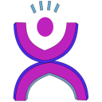

pyjamas
Pyjamas: write your own AJAX Framework
About pyjamas
Pyjamas
is a port of
Google Web
Toolkit to Python.
(Download Pyjamas 0.6). Read the FAQ and the
list of Features.
What is pyjamas?
pyjamas
is a stand-alone python to javascript compiler, an AJAX framework / library
and a Widget set API.
Why should I use it?
You can write web applications in python - a readable programming language -
instead of in HTML and Javascript, both of which become quickly unreadable
for even medium-sized applications. Your application's design can benefit
from encapsulating high level concepts into classes and modules (instead
of trying to fit as much HTML as you can stand into one page); you can
reuse - and import - classes and modules.
Also, the AJAX library takes care of all the browser interoperability
issues on your behalf, leaving you free to focus on application development
instead of learning all the "usual" browser incompatibilities.
What do other developers say about Pyjamas?
"Thanks for developing this, it seems like a much "healthier" way to do
web development,"
-fran
Overview
Like GWT, pyjamas
involves the translation of the application and libraries (including UI
widgets and DOM classes) to Javascript and the packaging up of that
Javascript code.
There are two core developer tools included with pyjamas.
pyjs![[1]](img/num1.png) translates Python code to Javascript by walking the Python abstract
syntax tree and generating Javascript.
translates Python code to Javascript by walking the Python abstract
syntax tree and generating Javascript.
In many cases, built-in Python types require a custom Javascript
implementation. For example, even though Python lists are similar
to
Javascript arrays, Python lists are converted to custom objects that
implement methods such as append. These custom objects,
required for translation by pyjs,
are defined in a library called
pyjslib.![[2]](img/num2.png)
Like GWT, pyjamas
comes with a set of UI widgets as well as a library for DOM
manipulation.![[3]](img/num3.png) These libraries are written in Python but
are, like everything else, translated to Javascript for deployment. These libraries are written in Python but
are, like everything else, translated to Javascript for deployment.
The overall translation of individual components is managed by build![[4]](img/num4.png) which also creates the necessary boilerplate code. The result is
a set of .html and .js files that can be served up
by a Web server.
which also creates the necessary boilerplate code. The result is
a set of .html and .js files that can be served up
by a Web server.
There are other components planned which have not been covered here
such as server-side code for communication in client-server
applications. The examples do however contain JSONRPC server-side
source code (in cgi python, and php) which give an idea of what's
involved.
|
![[overview]](img/overview.png) |
Getting Started
Pyjamas is slightly different from traditional Web development: it's
more like Desktop application development. Emphasising this and
helping you to begin developing your first application, is a
getting started page. Also,
a more comprehensive and direct guide to getting started is in
the online Pyjamas Book.
Building User Interfaces with Pyjamas
The
ui module
contains all of the main classes you need to create your user interface. At
first, this module can be a quite confusing because of the number of classes
defined. To become familiar with
the user interface side of Pyjamas, you might like to refer to the Pyjamas User Interface Showcase. You
might find the ui module class hierarchy useful.
Additionally, there is API documentation
on pyjd.org, along with a
tutorial on how to
create your own interactive widget.
Pyjamas Book
An online version of the
Pyjamas Book
is available to read, and is in development. Contact lkcl@lkcl.net if there are any issues that you believe should be
covered; if you find any errors; or if the book proves useful enough to
be worth paying for. The Bookreader itself is a Pyjamas application
which uses AJAX to load the contents as text files, and Wiki-like markup
is used, on the browser, to generate the HTML displayed.
Download
Pyjamas can be downloaded from sourceforge,
here.
The current release is 0.6. Latest source code in development
is available from sourceforge subversion,
here.
For the impatient who just want to get the source without wading through
sourceforge waffle:
svn co https://pyjamas.svn.sourceforge.net/svnroot/pyjamas pyjamas
Developer advice, and setting up a development environment
Web application development can be tricky: it can come as a bit of a shock
when compared to python app development to learn that web browsers do not
come with any proper debugging assistance whatsoever, by default.
You will need to install and/or enable a debugger in the browsers
that you use:
For Firefox, install both Venkman and Firebug.
For IE, install the "Microsoft Script Debugger".
For Safari, go to the settings and enable "Development".
Opera users, you are extremely lucky: opera has stack tracing by default.
You should also note that the Pyjamas compiler has a "-d" option which
will enable a python-like stack trace when a javascript exception occurs.
The amount of javascript generated can be FIVE times larger, so only enable
this during development.
Lastly, it is worth reiterating that Pyjamas-Desktop runs as pure python:
you should give serious consideration to running the application under
Pyjamas-Desktop alongside developing it for the browser. The availability
of python runtime stack traces and the simple fact that the standard python
interpreter is much better at catching certain kinds of errors than
(brain-damaged) browsers has generally found to make life much much easier.
News
17th August 2009 The MSHTML Pyjamas-Desktop port takes
shape! Various interesting technical challenges have been mostly
overcome, to bring IE's engine to the mix. This is not the
same approach as, for example,
Titanium, which enables <script type="text/python" />.
The MSHTML port of Pyjamas Desktop actually embeds an IWebBrowser2
Active-X instance into a Win32 window, provides access to the Document
of the IWebBrowser2 using Python/COM, and goes from there. In other
words, other than the python
"comtypes" package, which
is only 140k, and IE itself, there are no additional dependencies required
to get pyjamas applications running under MSHTML.
6th July 2009 Pyjamas compiles the Python version of
PureMVC. Kees Bos
improved the pyjamas compiler to the point where PureMVC would compile
to Javascript and run with zero modifications. He has also ported
the Employee Admin wxWidgets
example to run under Pyjamas, and it is close to working under PyJD as well.
2nd July 2009 Pyjamas Desktop is ported to run under XUL,
the Browser engine behind Mozilla Firefox. Thanks to Hulahop (from the
OLPC Sugar team) and to the developers of python-xpcom, Pyjamas Desktop
was successfully ported to XUL in only two days.
Useful Links
- The
Google Code page
has a wiki with
several pages you may find useful,
as well as the issue tracker we're using to log all the known bugs.
Please ignore the subversion
repository, it is now out-of-date: we have moved to
sourceforge
- The
Google
Group is the main mailing list
for people using or developing
pyjamas.
-
Pyjamas-Desktop
is a tool for running pyjamas
applications
on the desktop.
-
The
Sourceforge
project page will no doubt also be useful to some folks.
-
The Online version of the
Pyjamas Book,
which is itself a Pyjamas-based AJAX book reader, contains a comprehensive
guide to Pyjamas.
- The GWT
documentation pages
are actually quite useful. pyjamas
has reimplemented much of
GWT in Python, so you can use the GWT
documentation to learn how to build user interfaces in pyjamas.
-
#pyjamas on twitter.